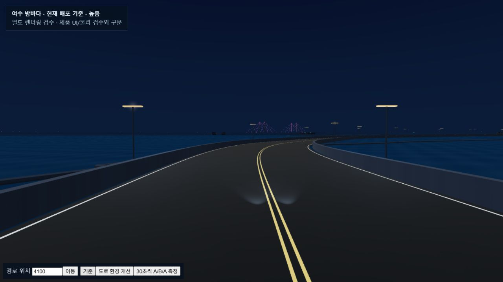
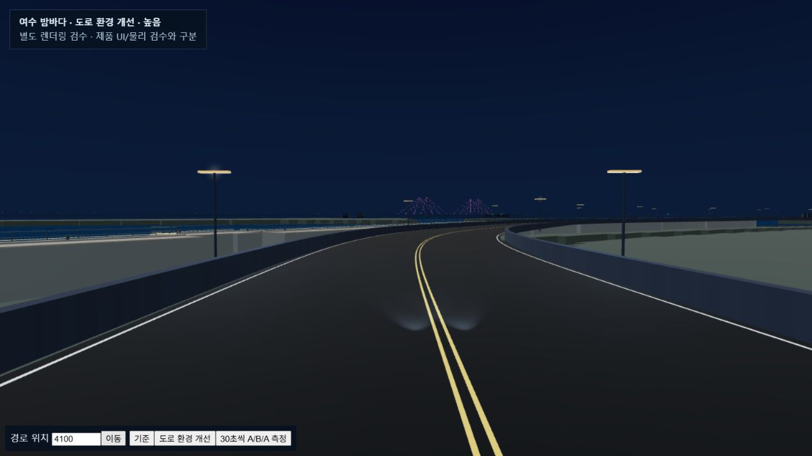
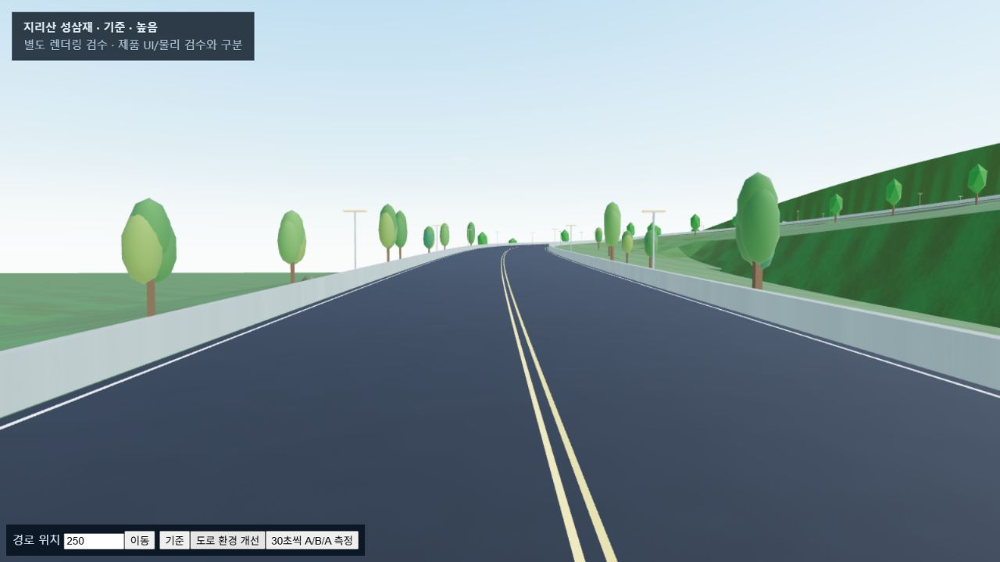
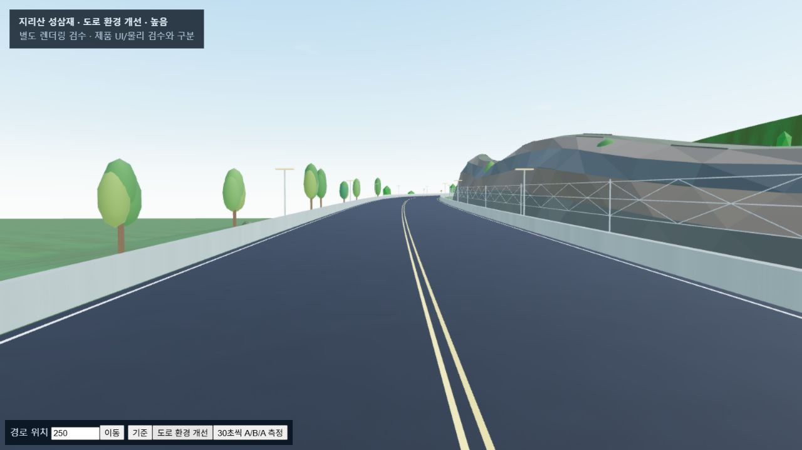

여수 밤바다 · 지리산 성삼재 도로 주변 개선
동일한 경로 위치·카메라의 실제 WebGL 검수 화면입니다. 여수는 기존 OSM 경로, 성삼재는 레이스용 순환 코스를 유지합니다.
여수 · 빠진 육지와 호안 연결

개선 전 · 육지가 없는 수변
개선 후 · 해안선의 육지와 호안 연결성삼재 · 암벽과 낙석망

개선 전
개선 후 · 절개 암벽·낙석망·풍화층지형 높이는 측량 복제가 아닙니다. 자동 레이스와 화면 크기 검수는 실제 휴대폰·사람의 운전 검증과 구분합니다. 수치와 출처는 docs/ROADSCAPE_20261013.md에 기록합니다.